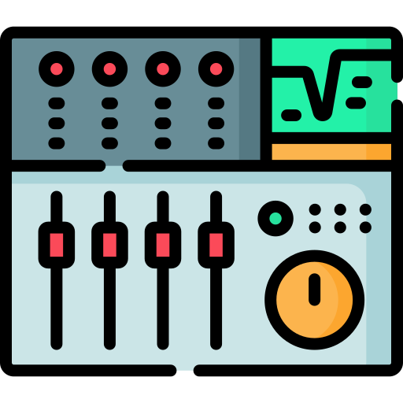
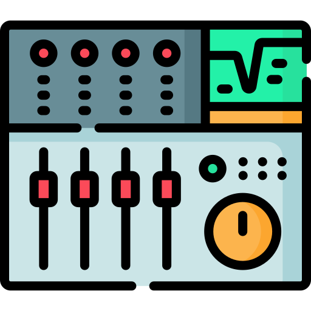

I'm Joshua
a MUSIC lover.



I love music and all types of instruments. I am a professional guitarist, but I love almost every instrument there is. Here are my top 2.

The acoustic guitar is my personal favorite instrument because it produces a naturally beautiful and unaltered sound. It can calm even the most savage beast.
This is another great instrument because it can produce every sound imaginable. It can express every musical emotion and emulate almost everything at extremely high levels.
Without music, the world would be gray and everyone would be stressed out all the time. How does music make you feel? Let me know.
CONTACT ME